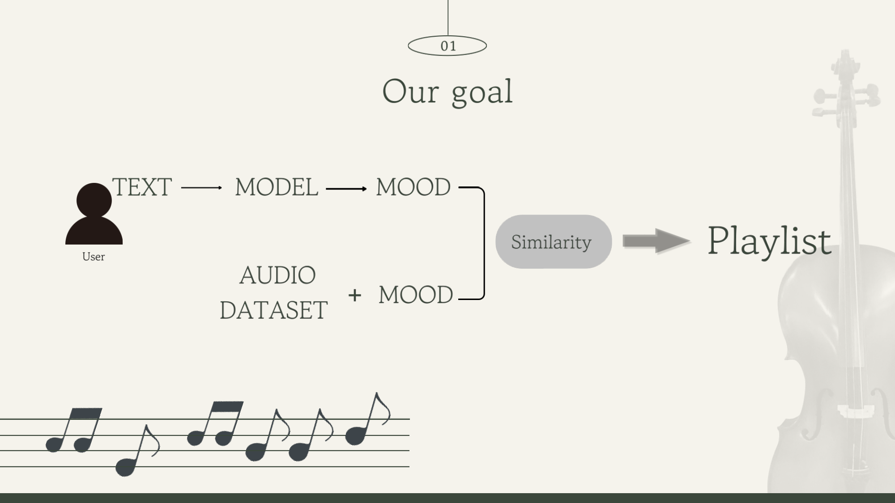
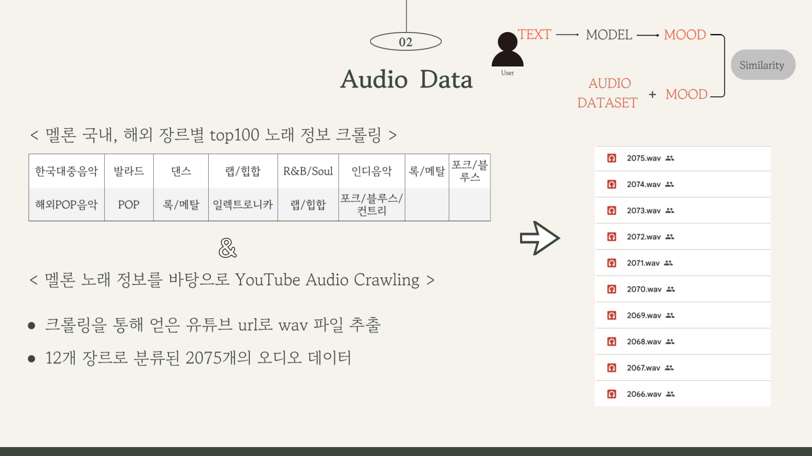
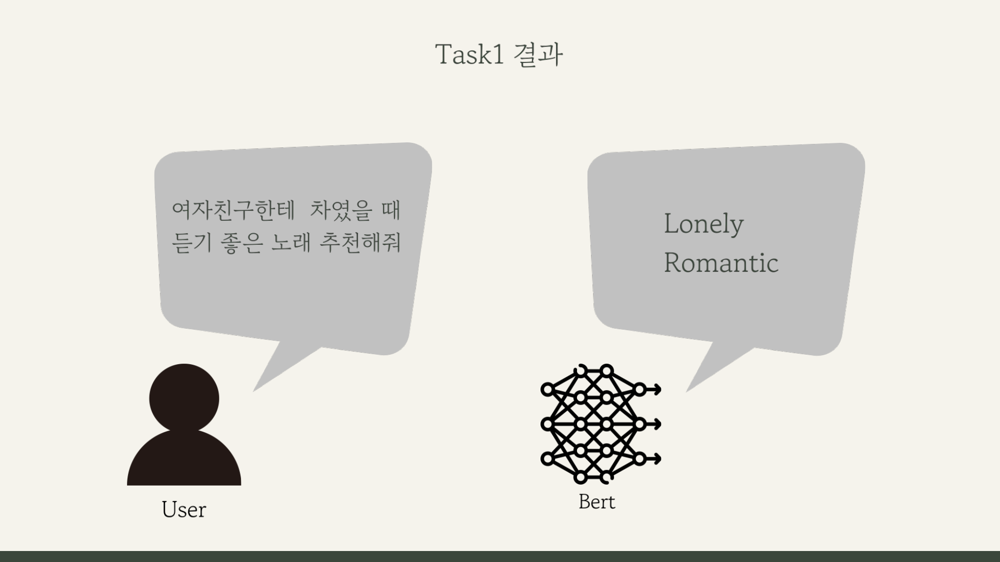
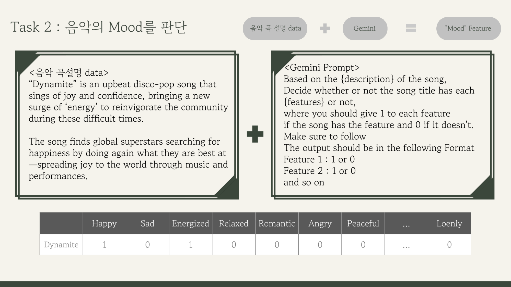
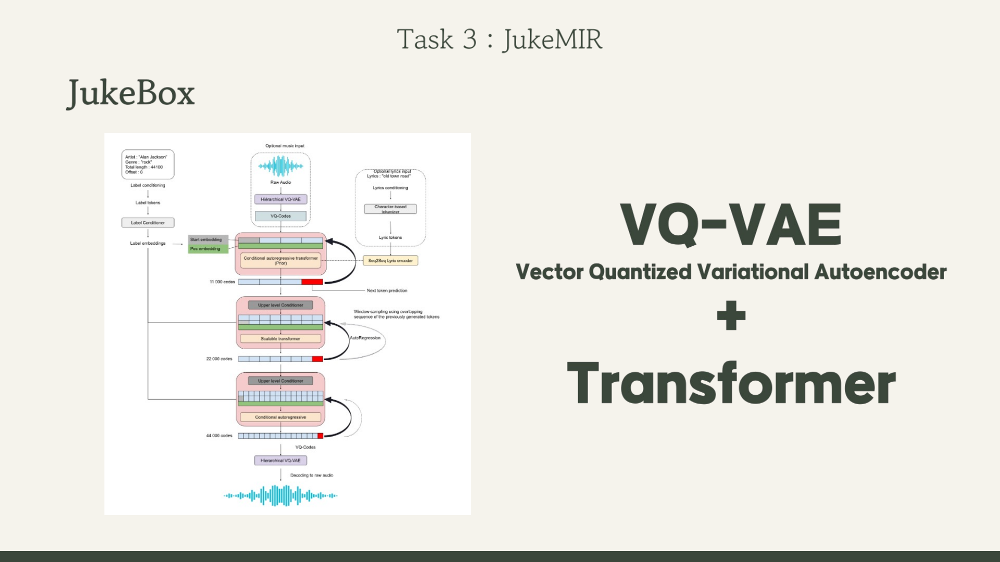
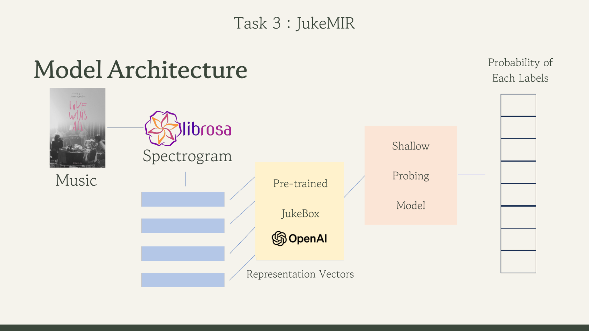
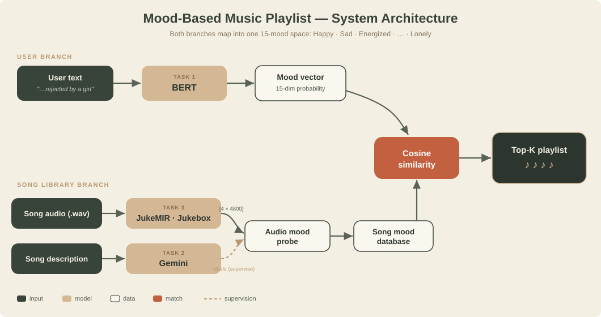
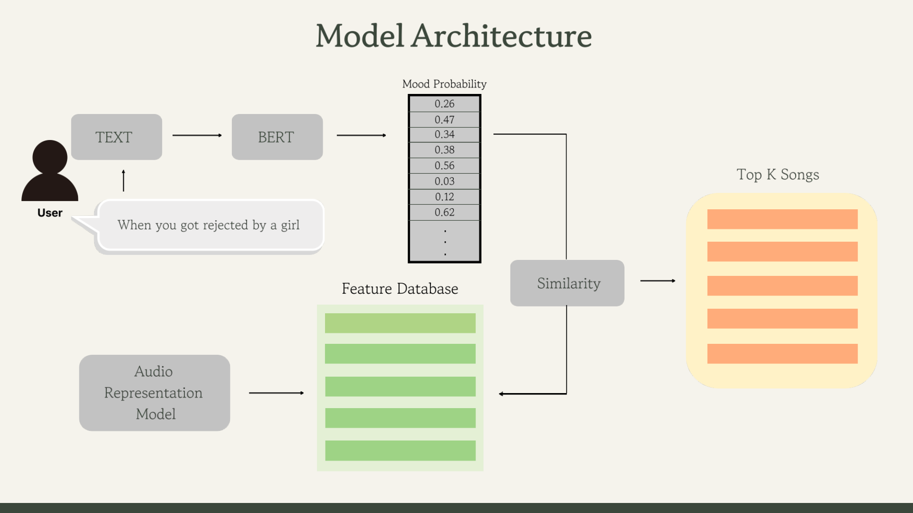

Tell us how you feel, in your own words — get a playlist that matches the mood.
A recommendation system that turns a free-text feeling into a mood-matched playlist.
Instead of asking you to pick a genre, Music Playlist lets you type how you feel or what you're doing — like "when you got rejected by a girl" or "I need to get motivated to exercise" — and returns songs whose mood fits.
The guiding intuition: a song's tempo and register define its genre, and its genre is essentially its mood. If we can read the mood from a user's text and know every song's mood, a simple similarity match yields the playlist.
A fine-tuned BERT reads the user's free text into a 15-dim mood vector.
Gemini labels each song's mood from its text description.
JukeMIR (OpenAI Jukebox) reads mood from the audio itself.
Two branches that meet in a shared "mood" space.
People increasingly listen to playlists — many songs bundled under a single vibe. The unit of consumption has become the mood, not the song. So we asked:
Can we build a playlist directly from the situational "Mood" a user is in?

Both sides speak the same language — a mood vector over 15 labels:
2,075 songs across 12 genres — plus mood labels we had to create ourselves.
We crawled Melon's domestic & international genre Top-100 charts, then used the
titles + artists to search YouTube and download audio as .wav — 2,075 songs in
12 genres.

.wav extraction.No off-the-shelf dataset paired text with mood or songs with mood. We generated both with the Gemini LLM — which is exactly what Tasks 1 and 2 are about. An earlier 288-adjective taxonomy was condensed to the 15 moods above.
Read the user's mood, label every song's mood, and learn mood from the audio.
Classify a user's free-text situation into mood(s). Since no (text, mood) data existed, we prompted Gemini to synthesize realistic, lazy-sounding search prompts with their implied moods, then fine-tuned BERT as a multi-label classifier.

class BERTClass(torch.nn.Module):
def __init__(self):
super().__init__()
self.l1 = transformers.BertModel.from_pretrained('bert-base-uncased')
self.l2 = torch.nn.Dropout(0.3)
self.l3 = torch.nn.Linear(768, 15) # 15 moods, multi-label
def forward(self, ids, mask, token_type_ids):
_, pooled = self.l1(ids, attention_mask=mask,
token_type_ids=token_type_ids, return_dict=False)
return self.l3(self.l2(pooled))Result: "여자친구한테 차였을 때 들기 좋은 노래 추천해줘" → Lonely, Romantic ✅
Give every song a mood vector. The raw metadata (title, singer) says nothing about mood, so we feed
each song's text description to Gemini and ask for a 0/1 flag per mood.

Happy = 1, Energized = 1, everything else 0.| Title | Singer | Mood |
|---|---|---|
| Love wins all | IU (아이유) | Sad, Romantic, Melancholic |
| Love me again | John Newman | Sad, Romantic, Lonely |
| Hello | Adele | Sad, Nostalgic, Melancholic, Lonely |
Learn a song's mood from the audio itself. We use JukeMIR —
representations from OpenAI's Jukebox (VQ-VAE + Transformer) repurposed
for Music Information Retrieval.

Our audio pipeline standardizes every song before feeding Jukebox:
[4, 4800]
User text and song audio meet at a similarity match.


Three real queries and the playlists the system returned.
Mood labels are LLM-generated (no human ground truth); the library is bounded by Melon Top-100.
Collapsing rich audio + text into one 15-mood space loses nuance — the weakest link.
The text and audio branches are trained independently and only meet at the similarity step.